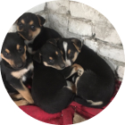

Срочно необходимо забрать собаку (мальчик) на передержку или насовсем.
Послезавтра его ждет усыпление. С кормом и
доставкой поможем. В данный момент находится в вольера САХа.
Контактный телефон + 37529 58930557
Спасите жизнь хвостику.
Контактный телефон + 37529 58930557
Спасите жизнь хвостику.

Найдены бедомные щенки по улице Горького д.56.
Сегодня будут перевезены в вольеры САХа. Если у вас есть возможность взять на передержку или пристроить малышей - будем вам очень благодарны.
Сегодня будут перевезены в вольеры САХа. Если у вас есть возможность взять на передержку или пристроить малышей - будем вам очень благодарны.